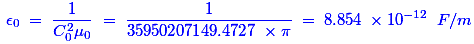

- Electric field inside a hollow metallic charged sphere i
Inside a hollow metallic charged sphere, that will not allow the outside electric field because of the charge separation of electrons and holes at the surface of sphere and creating an equal and opposite field. Hence, the electric field inside a hollow metallic charged sphere is zero.
- Unit of electric flux density is
We know that the tube forces radiating from a charged body, which are also referred as electric flux, is equal to the total charge of the body. The amount of radiating electric flux through the unit surface area is known as electric flux density. Hence, the unit of electric flux density is coulombs / m2. As the unit of charge is coulomb.
- An electric field can deflect
X-rays are EM waves and they would not be deflected by electric field. Neutrons are not charged. Alpha particles are charged. Thus, alpha particles could be deflected by electric field, because only charged particles could interact with electric field.
- The electric field on a plane is decribed by V = 20 [ (1 / r) + ( 1/r2) ]. The field due to
The above expression shows that the dipole field varies as ( 1 / r )2 and the monopole field varies as ( 1 / r). Hence, the field produces due to the presence of both dipole and monopole.
- Coulomb's law for the force between electric charges most closely resembles with
Coulomb force is proportional to the product of charges of two objects. Gravitational force is proportional to the product of masses of two objects. Both forces vary inversely as the square of the distance between the two objects, because both laws are inverse square law.
- A point charge in space is attracted towards a dielectric material because of the
Due to the surface charge density, the particle of a dielectric material carrying the same sign of charge and it is being attracted to one another. Since, the electrostatic flux is directly proportional to the charge density and thus the due to the maximisations of electrostatic flux that point charge is attracted towards a dielectric material.
- For dielectrics flux is proportional to
We know that the formula for capacitance is C = Q / V, this becomes Q = C × V. Hence, this expression is clearly says that the dielectric flux or charge ‘Q’ is directly proportional to potential difference ‘V’.
- When a dielectric is placed in an electric field the field strength
An applied electric field would polarize the material by orienting the dipole moments of polar molecules. This dielectric medium decreases the effective electric field between the plates and it would increase the capacitance of the parallel plate structure.
- A positive and a negative charged are initially 50 mm apart. When they are moved close together so that they are now only 10 mm apart, the force between them will be
The attraction force between a positive and a negative electric charge is inversely proportional to the square of the distance between their center.
- Midway between two equal and similar charges, a third equal and similar charge is placed, then this third charged will
Force on the first two charges is cancel due to the presence of third charge. But, there is no force to cancel on third charge. Hence, the system remains in stable equilibrium.
- It was suggested by _____________ that the electric field should be imagined to be divided into tubes of force containing a fixed number of line of force
Faraday is the only person who did this work among all the above three persons. He assumed these tubes to the elastic and having the property of contracting longitudinally that repels laterally. With the help of this property, he has given the above statement.
- If two point charges are denoted by + Q and - Q and distance between this charges is d, then the dipole moment P equal to
If an electric dipole has two point charges +Q and –Q separated by the distance d, then the dipole moment P would be the product of the charge and the distance.
- Electric flux in coulombs emanating from any surface of a cube containing C coulombs of charge at its centre i
Gauss’s Law says that the total flux through a closed surface is equal to the enclosed charge q over ε0. The particle is located at the center, so because of symmetry, the electric field and thus the flux is the same on any face. So, the flux through a single face as well as center path is

- The absolute permittivity of free space is given by
It is an electrical constant or ideal physical constant, which is the value of the absolute dielectric permittivity of classical vacuum. The expression of the absolute permittivity is as follows,

Here, C0 is the speed of light in free space,
μ0 is the vacuum permeability. - Electric displacement is a ____________________ quantity.
The electrical displacement represents the component of an electric field associated solely with the presence of separated free electric charges, purposely excluding the contribution of any bound electric charges in neutral atoms or molecules. Hence, that should be a vector quantity.
- A unit tube of flux is known as ____________________ tube.
Faraday is a famous physicist who expressed the principle of tube of flux. That is why his name became the unit of tube of flux.
- The unit of electric displacement vector is
The electric displacement field is referred as the movement of charge through unit area. Hence, the unit is C/m2.
- A charge which when placed in vacuum from an equal and similar charge repels with a force of 9 × 103 N, is known as
According to the Coulomb’s law, charge Q = Force × Distance2 / k. If we consider the distance as one then the charge Q = ( 9 × 103 ) / ( 9 × 109 ) = 1 × 10-6. It is nothing but the micro coulomb.
- Voltage applied across a dielectric produces an electrostatic field 50 times greater than air. The dielectric constant of the dielectric will be
Because, the amount of electrostatic field is directly proportional to relative permittivity. This relative permittivity is also called as dielectric constant.
- ___________________ at a point may be defined as equal to lines of force passing normally through a unit cross-section at that point
The force experienced by a unit positive charge placed at a point and its direction is the direction along which the force acts. This is called as Electric intensity. This production of force would pass through a unit cross section at that point.
Design with  by SARU TECH
by SARU TECH
www.sarutech.com
Content Credited to electrical4u.com
Online Electrical Engineering Study Site